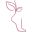
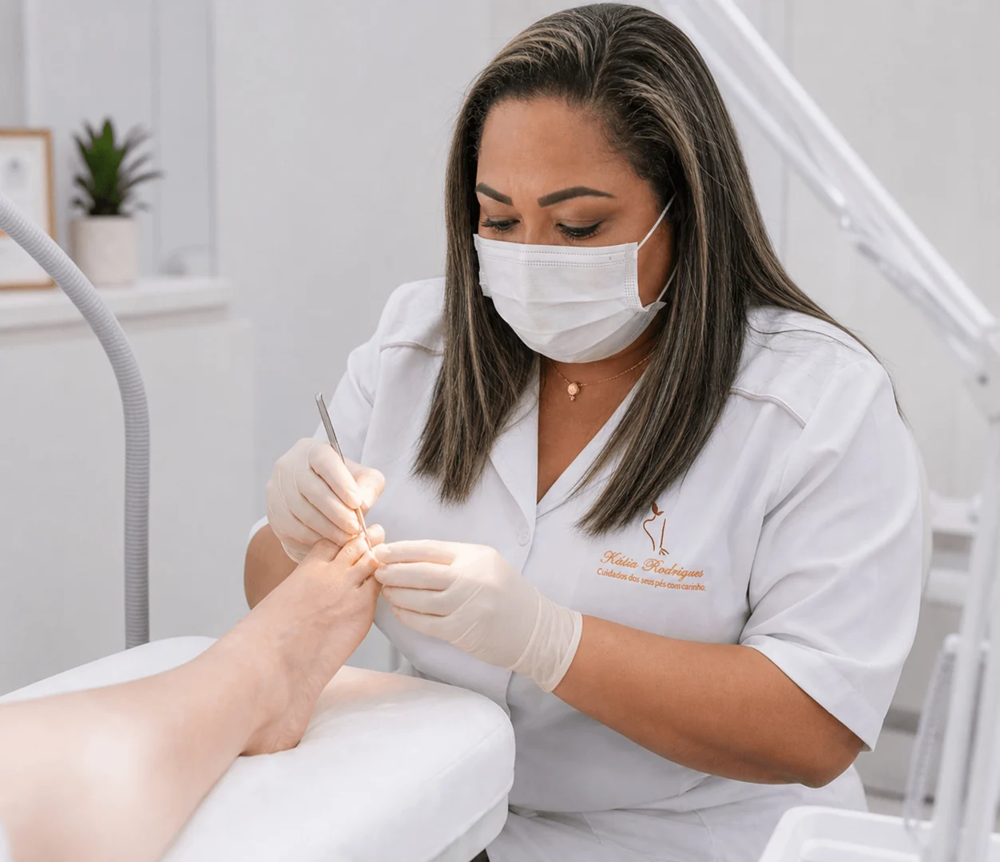
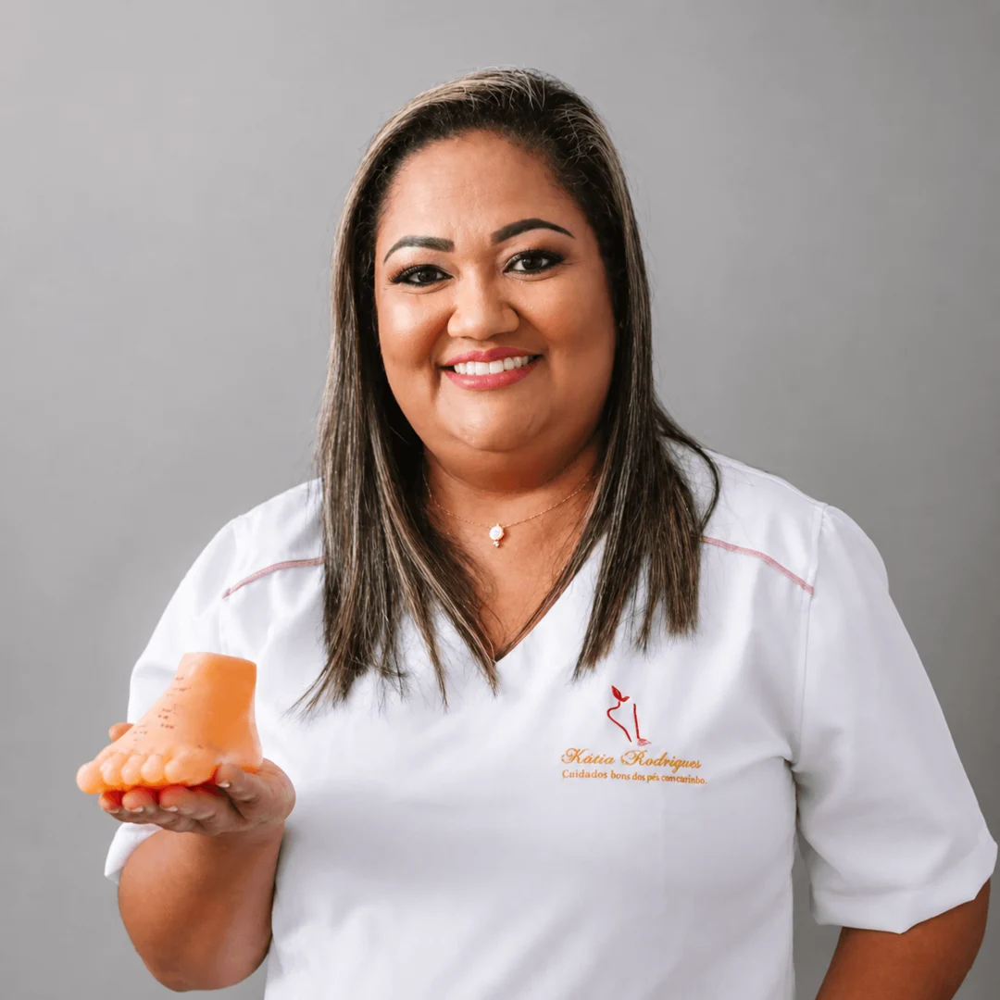

Tratamentos especializados para aliviar dores, prevenir complicações e devolver o conforto ao caminhar com segurança, técnica e cuidado profissional.

Desconforto que limita suas atividades diárias.
Dor, inflamação e risco de infecção.
Pressão e dor que atrapalham sua rotina.
Ressecamento, fissuras e desconforto constante.
Risco de complicações graves.
Problemas que afetam sua autoestima.
Isso não é estética. É um problema de saúde.

Podologista docente, especialista em saúde dos pés, com ampla experiência no tratamento de pacientes, incluindo casos delicados como pés diabéticos e idosos.
Meu propósito é proporcionar saúde, conforto e qualidade de vida através do cuidado profissional, prevenção e educação.
Tratamento completo com alívio imediato da dor.
Remoção segura e prevenção de novas formações.
Tratamento eficaz com segurança e acompanhamento.
Hidratação profunda e tratamento das fissuras.
Órteses para corrigir a curvatura e evitar encravamentos.
Análise da pisada e indicação de palmilhas.
Correção e alívio para joanetes, dedos em martelo e pé chato.
Tratamento de fascite plantar, tendinite e sobrecargas.
Indicação do calçado ideal para cada tipo de pé.
Tratamento de feridas, úlceras e infecções podais.
"Ótima experiência, com profissional com excelente execução de trabalho."
"Atendimento diferenciado, a melhor profissional da área , essa eu indico"
"profissional incrível super recomendo!"
Analisamos a saúde dos seus pés com atenção e cuidado.
Identificamos a causa do problema para o tratamento ideal.
Procedimentos seguros e personalizados para cada necessidade.
Dicas e cuidados para manter seus pés sempre saudáveis.
Nossas técnicas são realizadas com segurança e cuidado para minimizar qualquer desconforto. O foco é sempre o seu bem-estar e o alívio imediato da dor.
Sim! Somos especialistas em pés diabéticos. O acompanhamento podológico é essencial para prevenir complicações e manter a saúde dos pés segura.
A duração varia de acordo com o tratamento necessário, mas em média uma sessão completa leva de 45 a 60 minutos.
Tentar resolver problemas como unhas encravadas ou calos em casa pode agravar a situação, causando infecções. O ideal é sempre buscar um profissional qualificado.
Para manutenção preventiva, indicamos uma visita mensal. Porém, para tratamentos específicos, a frequência será avaliada e recomendada durante a consulta.
Não é necessário encaminhamento médico para agendar sua avaliação e iniciar os cuidados preventivos e tratamentos podológicos.
Este site foi solicitado via @Instagram